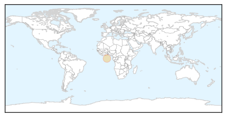
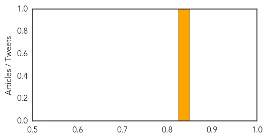
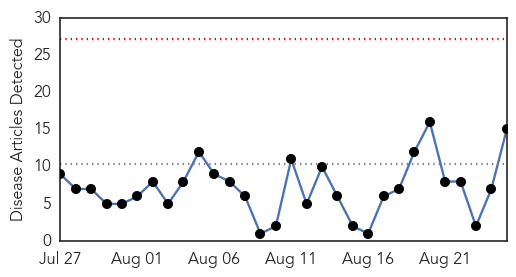
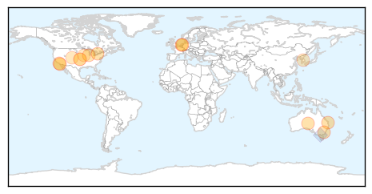
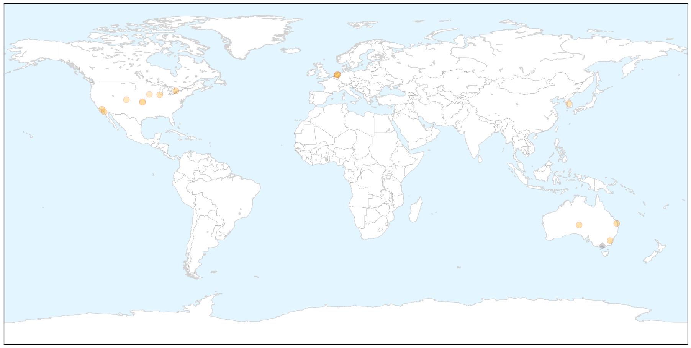
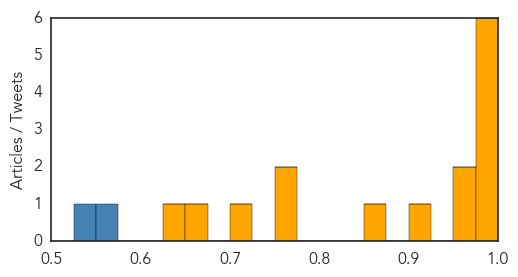

Bubonic Plague
30-Day Web Trend
6 alerts, 0 warnings

30-Day Twitter Trend
0 alerts, 0 warnings

Article Locations
Article Confidences
Top Articles:
Top Tweets:
-
No tweets found for Aug 25, 2015
Influenza
30-Day Web Trend
0 alerts, 0 warnings

30-Day Twitter Trend
3 alerts, 0 warnings

Article Locations

X

Article Confidences
Top Articles:
- 0.995
- Flu season draws to a close
- 0.994
- Why you might not be covered against worst flu in 5 years
- 0.983
- Scientists are 'one step closer' to creating a universal flu vaccine
- 0.979
- Influenza Vaccine Offers Up To 6 Months Worth Of 'Moderate, Sustained' Protection During Flu Season
- 0.979
- Breakthrough in quest for 'super' flu jab
- 0.979
- A Thousand Cases of H1N1, Five Dead
- 0.969
- Life-long vaccine against flu very close, scientists say
- 0.963
- New Study by TSRI and Janssen makes Major Advance toward More Effective, Long-Lasting Flu Vaccine
- 0.921
- Researchers inch closer to a universal flu vaccine
- 0.868
- Dog flu outbreak gained foothold in Midwest
- 0.751
- August 24, 2015 Archives
- 0.751
- August 24, 2015 Archives
- 0.724
- Flu vaccine prevents .002 hospitalizations per 1000 elderly vaccinated on average
- 0.673
- Officials, Farmers Preparing for Fall Bird Flu Outbreak Amid Ongoing Mystery
- 0.640
- Diagnosis, effective medication key for children with asthma
Top Tweets:
- 0.569
- Time dependence of evolutionary metrics during the 2009 pandemic influenza virus outbreak http://t.co/FdssCZn0FX
- 0.549
- RT: Maryland Flu News: Universal flu vaccine a step closer as scientists create experimental jabs http://t.co/mu4ATmI1yR influenza